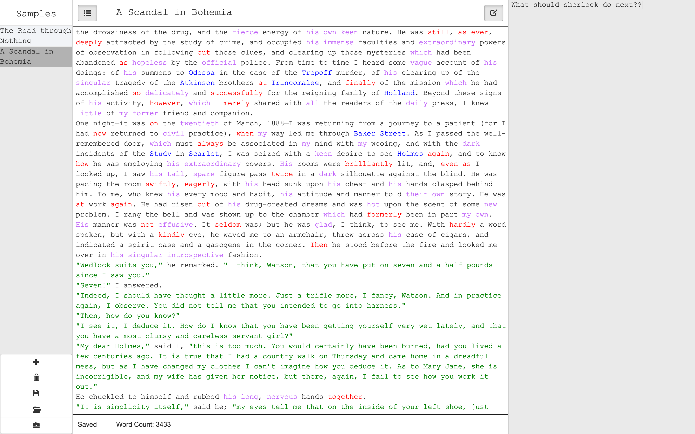
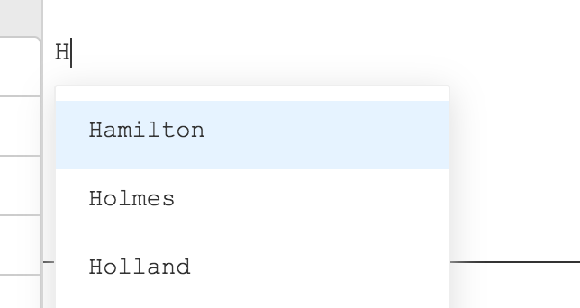
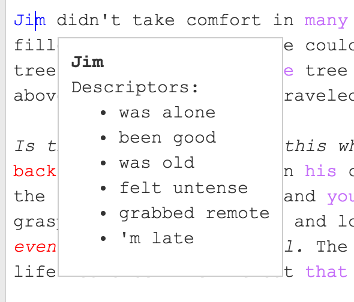
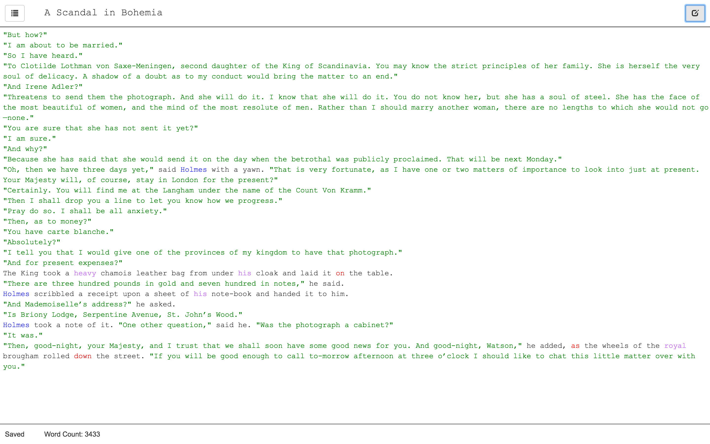

Hide all the clutter and just have things work, so you can focus on your writing.
Our focus on creative writers allows us to autocomplete the things that writers need to focus on -- like character names and dialogue.
We use a natural language processing system to help understand what you are trying to create, allowing our system to show texual insights that you might miss on your first pass.
Our context-sensitive text highlighting allows you to see at a glance what you have in your text. Whether its proper nouns(blue), adjectives(purple), adverbs(red), or conversations(green).
